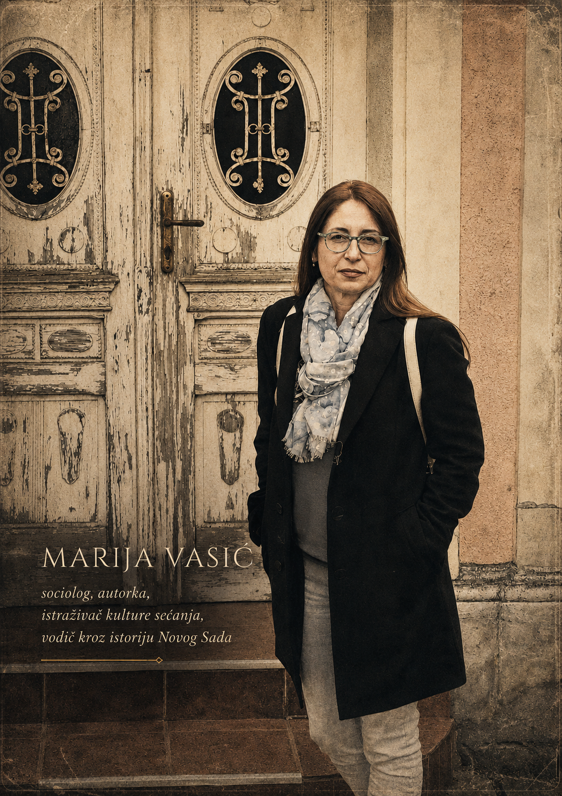

Sociolog · Autorka · Istraživač
Sociolog, autorka, istraživač kulture sećanja, holokausta i antisemitizma. Vodič kroz istorijsku memoriju Novog Sada.
"Pamćenje nije samo prošlost — ono je živa tkanina od koje pravimo sadašnjost."— Marija Vasić
Dve književne tvorevine koje spajaju sociološku rigoroznost s emotivnom snagom proze — svedočanstva o tišini, preživljavanju i dužnosti pamćenja.
Roman o tišini i preživljavanju
Kroz preplitanje lične istorije i kolektivne traume, ova knjiga istražuje kako zajednice grade, čuvaju i gube sećanje na najteže momente svoje prošlosti. Oslanjajući se na decenije istraživanja i razgovore sa svedocima, autorka vodi čitaoca kroz lavirinte ćutanja i govora, zaborava i pamćenja.
Zapisi o kamenu, mestima i trajanju
Istraživanje koje polazi od fizičkih mesta — ulica, zgrada, ploča, groblja — i kroz njihove slojeve odkriva stratume istorije koji su gotovo nestali. Knjiga je istovremeno i naučna studija i lično svedočanstvo o važnosti materijalnog pamćenja u doba digitalnog zaborava.
Kako nauka koja se bavi društvom može da pristupi fenomenu koji se opire racionalnom objašnjenju? Ovaj esej ispituje granice sociološke metodologije kada se suoči s industrijskim masovnim ubistvima.
Analiza savremenih oblika antisemitizma u digitalnom dobu i njihove veze s istorijskim predrasudama.
Traganje za tragovima januarske racije kroz fizički prostor savremenog Novog Sada — šta je ostalo, šta je izbrisano.
Politike sećanja i pitanje ko odlučuje koja trauma zaslužuje javno obeležavanje i zvanično pamćenje.
Dokumentarno putovanje kroz ostatke jevrejskih zajednica Vojvodine — od nekadašnjeg sjaja do sadašnjeg ćutanja.
Mesta koja nose historiju — kamen po kamen, priča po priča.
Izgrađena 1909. godine u maursko-jevrejskom stilu, Neološka sinagoga bila je duhovno središte jevrejske zajednice Novog Sada. Danas služi kao kulturni centar, ali njeni zidovi čuvaju sećanje na ljude koji su molili ovde, a kojih više nema.
1909Izgrađena 1909. u maursko-jevrejskom stilu. Duhovno središte zajednice.
Na ovom mestu u januaru 1942. hiljade Jevreja i Srba streljano je i bačeno pod led.
Jedno od najstarijih sačuvanih jevrejskih grobalja u Vojvodini. Tiho svedočanstvo prekinutih života.

Marija Vasić · Novi Sad
Dr Marija Vasić je profesorka sociologije i istraživač sa dugogodišnjim fokusom na kulturu sećanja, holokaust i antisemitizam na prostoru Vojvodine i šire regije. Njen rad kombinuje rigoroznu naučnu metodologiju s duboko humanim pristupom temama koje se tiču preživljavanja, traume i odgovornosti prema prošlosti.
Osim akademskog rada, organizuje istorijske ture kroz Novi Sad — vodene šetnje istorijskim mestima sećanja koje spajaju edukaciju, emotivnu dubinu i poštovanje prema žrtvama. Ove ture su postale važan deo memorijalne kulture grada.
Vođene šetnje kroz mesta koja nose nevidljive tragove — jevrejske četvrti, mesta racije, sinagoge, groblja. Svaka tura je edukativno i emotivno putovanje.
Šetnja kroz nekadašnji jevrejski kvart, sinagoge i mesta gde su živeli i radili Novosađani koji su stradali u holokaustu.
Memorijalna tura koja prati mesta januarske racije, od žrtvenih tačaka do mesta poginulih, praćena istorijskim svedočanstvima.
Šira tura koja otkriva slojeve istorije Novog Sada — od austrougarske baštine do ratnih trauma 20. veka.
Za narudžbine knjiga, rezervacije tura, akademsku saradnju ili medijske upite — sve poruke su dobrodošle.